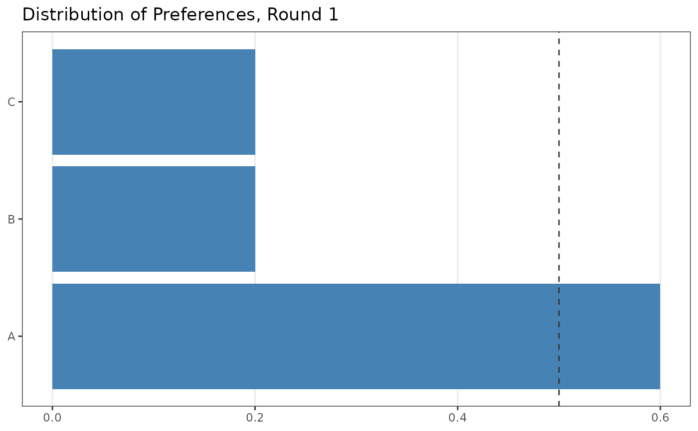
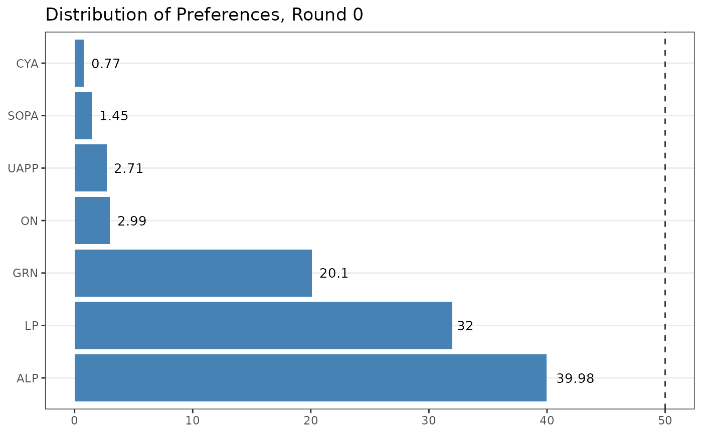

Draws a bar chart showing how votes or preferences are distributed across items (candidates, parties, options) in a single contest or round. Bars are ordered from highest to lowest value.
Arguments
- data
A data frame in wide or long format. See Details.
- items
<
tidy-select> Columns to plot. Interpretation depends on format:Wide: A tidy-select expression identifying the item columns to pivot, e.g.
ALP:Otheror-c(round, winner).Long: A single column containing item names, e.g.
PartyAb.
- value_col
<
tidy-select> Long format only. Column containing the numeric values to plot (vote shares or counts). WhenNULL(default), wide format is assumed and this argument is ignored.- round_col
Character. Name of the column used to identify rounds. Default
"round", matchingdop_irv()output. Override when your data uses a different column name (e.g.,"CountNumber").- at_round
Integer. The round number to display. Default is
1.
Details
dop_bar() accepts data in two formats, detected automatically via
value_col:
Wide format (value_col = NULL, the default)
One row per round, one column per item. This is the direct output of
dop_irv():
Supply the item columns via items (e.g., ALP:Other or
-c(round, winner)) and select the round to display with at_round.
Use round_col if your round column is named something other than
"round" (e.g., round_col = "CountNumber").
Long format (value_col provided)
One row per item, with the item name and its value in separate columns. This is the format of aecdop_2022 and similar raw electoral datasets:
DivisionNm | CountNumber | PartyAb | CalculationValue
Adelaide | 0 | ALP | 0.40
Adelaide | 0 | LNP | 0.35
Adelaide | 0 | Other | 0.25Supply the item name column via items, the value column via
value_col, and the round to display via at_round.
Use round_col if your round column is named something other than
"round" (e.g., round_col = "CountNumber").
See also
dop_irv() to generate wide-format input from raw ballot data.
Examples
library(ggplot2)
# Wide format: output of dop_irv()
votes <- prefio::preferences(c("A > B > C", "B > A > C", "C > B > A",
"A > B > C", "A > C > B"))
irv_result <- dop_irv(votes)
dop_bar(irv_result, items = -c(round, winner), at_round = 1)

# Long format: pre-filter to desired contest, then plot
long_df <- aecdop_2022 |>
dplyr::filter(
CalculationType == "Preference Percent",
CountNumber == 0,
DivisionNm == "Adelaide"
)
dop_bar(long_df, items = PartyAb, value_col = CalculationValue,
round_col = "CountNumber", at_round = 0)
